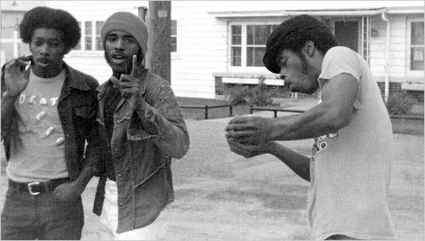
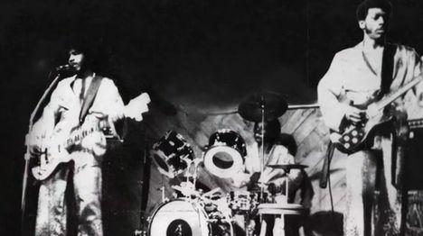
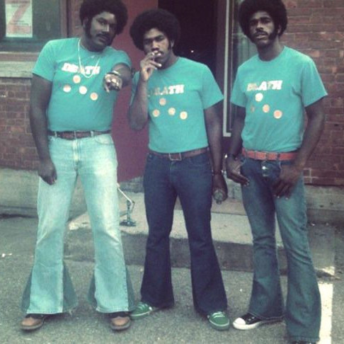
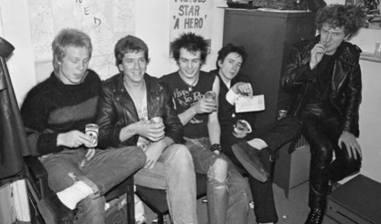
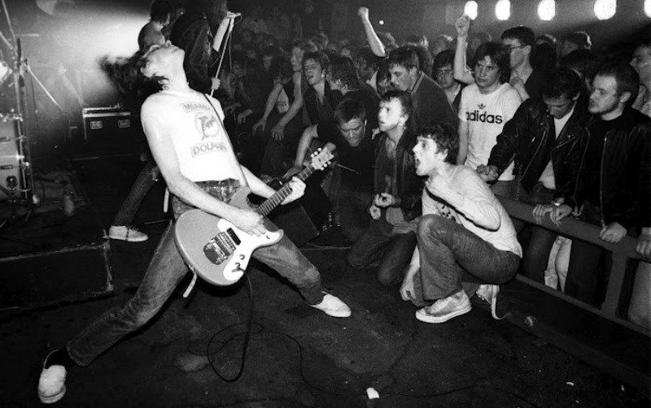
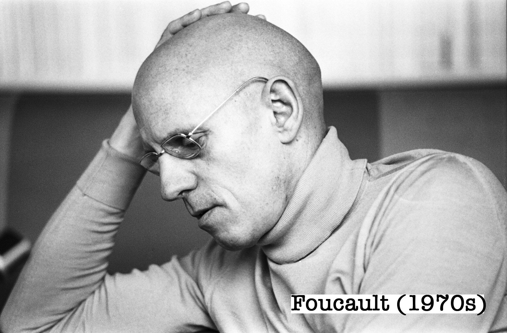
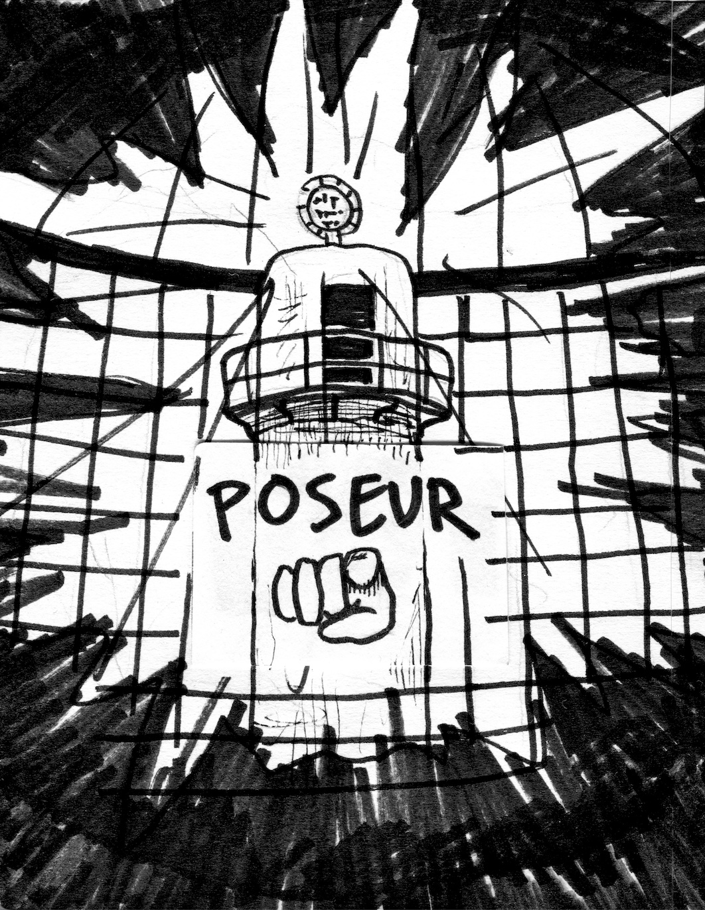
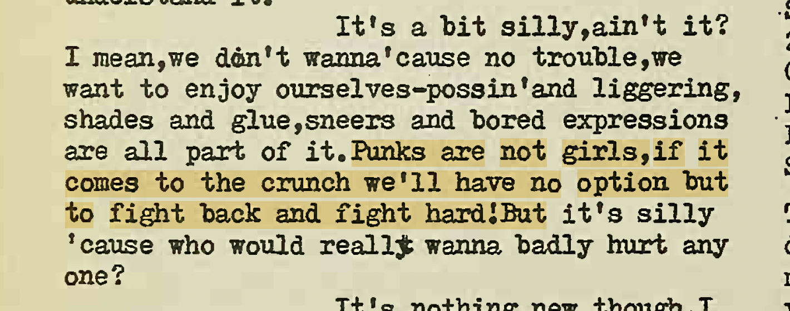
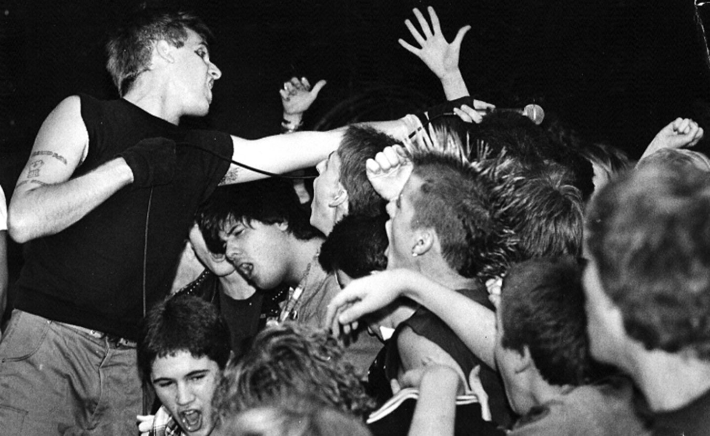

☆ PUNK ☆
This site node is about punk. It’s about gender and social power. It’s about the time I got knocked over in the Destroy Boys circle pit and thought to myself: “I didn’t even want to be here. Why am I doing this. I know I hate the circle.”
I have a real love-hate relationship with punk. I think its aesthetics hit hard, and most of its philosophies are stupid and contradictory. I would rather not talk about it at all because what I hate the most is people arguing about what punk is and what punk is not, and I can’t stand the thought that I’m contributing to that conversation. Unfortunately for us though, emo traces its lineage back to 70s punk, which means that a lot of the philosophies embedded in punk (and underground rock music writ large) are relevant to the story here. What I will NOT be offering you here is a complete history of punk. (There is no shortage of literature on this subject.) I’m not going to be talking about Glen Matlock’s untimely exit from the Sex Pistols or Blank Generation’s impact on the 1977 CBGB scene or whatever. Here, we will be looking specifically at punk as a masculine-coded subculture. This is NOT to say that women or queers do not participate in punk (they do, and have from punk’s beginning). My point here is that punk’s beliefs and values have historically emerged from predominantly white-masculine social circles, which then give stereotypically-masculine white men a huge advantage in navigating punk spaces.
Let us begin:
Although my emo timeline starts with mid-70s British punk (I had to start somewhere), it’s worth noting that punk’s sound came together via several important U.S. based influences, one of whom was the band Death from Detroit. Founded in 1971, Death is the clearest bridge between Detroit’s well-established garage rock scene (1960s) and what eventually became “punk” later on in the 70s. As an all-Black band, they struggled to fit in with the white-dominated garage rock scene of the time and mostly played shows to Black Motown audiences who didn’t connect with their emergent sound. This obstacle, combined with their unwavering commitment to the contentious name “Death,” led to their fallout with the music industry and eventual erasure from the punk historical record until they were re-discovered by punk fans in the early twenty-first century. Funny that label execs couldn’t get past the name Death, yet Iggy Pop stripping and rolling around in broken glass was perfectly marketable to them. And by “funny” I mean racist. I mention this story as just one example of the challenges that non-white artists face in white-dominated rock cultures, which themselves are built on the backs of black genres.
Also, as a bit of trivia, Death was working on a very special album when they fell out with their record label. That album? Was a rock opera about death that portrayed it in a positive light. If that concept doesn’t sound familiar to you yet, don’t worry, we’ll get to My Chemical Romance in a bit.)
CLOSE



Boys have dominated punk subcultures since the beginning. The general consensus around punk’s early years is that it was made up of predominantly young, working-class, white males.1 And this is partially true. While it’s impossible to know the socioeconomic position of every person attending punk shows in the 70s, records from the era show that young white men made up the majority of bands, audiences, and were generally the main participants in punk street culture. But, punk’s “working class” image often obscured some of the scene’s more affluent roots. A lot of punk’s most influential figures came out of art schools, including Malcolm McLaren who was born into a decidedly upper-middle class family (his great-grandfather was a diamond dealer) and went on to recruit, manage, and produce bands like the New York Dolls, the Sex Pistols, and Adam and the Ants. Regardless, I’m not here to talk about whether punk is actually working class or just benefits from its image as such. So let’s keep moving.
Anarchy in the U.K., The Sex Pistols (1976)

Malcom McLaren (right) with the Sex Pistols
Sociologists have long theorized that young men gravitate toward masculine subcultures as a way to reinforce their gender identity when their masculinity feels threatened by mainstream society. Early punk scenes, with their emphasis on aggression, volume, confrontation, toughness, and self-determination, functioned as an outlet for these boys to express stereotypically masculine behaviors that they couldn’t in their everyday lives. As subcultural theorist Michael Brake writes of punk:
“[these] subcultures are male-dominated, masculinist in the sense that they emphasize maleness as a solution to an identity otherwise undermined by structural features.”2
Notably, this era of British history saw white men losing (some of) their social privileges in the wake of movements for gender and racial equality in the UK and United States. White masculinity was, as they say so often nowadays, “in crisis.”
So, put more simply, punk (in its traditional sense) is designed for the performance white masculinity. It presents this white masculinity as the solution to a crisis of identity, especially when one’s sense of manhood is threatened by socioeconomic factors. This means that stereotypically-masculine white men become the most “natural” punks and define the punk archetype.

Despite its leftist leanings, early punk was riddled with bigotry. (If you’re lucky enough to have never been subjected to this brand of contradictory leftist misogyny, I recommend dating a male leftist, or befriending someone who has. Or reading this: [source: the misogyny of left wing movements book] )
As is the case in so many scenes, punk in its early years was (for the most part) accessible to women and people of color, and punks from these groups played major roles as musicians, producers, tastemakers, zinesters, and community organizers. Punk historians like Lauraine LeBlanc estimate early punk’s gender divide somewhere around 3:2 favoring men. But as more and more young white men joined, punk became increasingly associated with white-maleness, which encouraged more young white men to join, which made punk less appealing to women and people of color, etc. etc. The boys dominated the bands, the crowds, and the streets, and they gradually codified punk’s norms and values through their interactions with one another. Racism and sexism ran largely unchallenged throughout the scene because confronting the white boys in control often led to exclusion or violence. Early punk’s history with Nazi symbology is also well documented, and this type of racially insensitive display for “shock value” allowed earnest white supremacy to gain a major foothold in the scene.3 In the 80s, American hardcore punk became notorious for its extreme physical violence and general exclusion of anyone who didn’t fit the white-male punk stereotype. (Many of this scene’s earliest pioneering bands were ALSO founded by women and people of color who got pushed out of the scene by white men.)
Because punk is a masculine-coded subculture organized around masculine-coded values, the presence of women at all often ran counter to what the boys believed that punk was. For them, GIRLS IN THE ROOM CHALLENGED PUNK’S AUTHENTICITY because girls represented everything that punk is not: soft, passive, delicate, shallow, mainstream.
In 1975, notable French philosopher and turtleneck enthusiast Michel Foucault was interested in disciplinary power and social control. He mobilized Jeremy Bentham’s monstrous prison design (the panopticon) as a metaphor to explain how disciplinary power works. In the panopticon’s design, inmate cells form a circle around a central guard tower. Strategic lighting prevents inmates from seeing into the tower, while guards monitor each cell from the shadows. Because it’s impossible for inmates to know if they’re actually being watched from the dark tower, they must assume that they are under constant surveillance.

For Foucault, the panopticon is the mechanism of disciplinary power reduced to its ideal form. The guard tower doesn’t even need to be manned for the system to work properly because the structure itself compels inmates to behave.4 Foucault used this metaphor to explain how power exceeds the bounds of any one figure or group and is instead a mechanism built into the fabric of our social existence. We don’t follow social laws because someone is telling us to directly, we follow these laws because some deeper, harder to define pressure compels us to behave in certain ways that align with (and reinforce) what is socially “normal”. In this model of power, the inmate (us) feels a sense of individual autonomy—the sense that we could do anything we wanted to—but the heightened self-consciousness of being watched prevents us from actually acting out against the dominant social norms.

The sick genius of the panopticon’s design is that it leads inmates to police themselves. Subjects of the panopticon internalize the disciplinarian’s gaze, meaning that the threat of the all-seeing tower is incorporated into the structure of the self. (In modern terms, we call this internalized misogyny, internalized homophobia, etc.) Put more simply, this all means that:
SUBJECTS SELF-POLICE TO REINFORCE THEIR IDENTIFICATION WITH SOCIAL GROUPS.
Because punk is, at its core, a subculture designed for the unrestrained expression of white masculinity, punks must (at some level) perform a type of “white masculinity” in order to achieve subcultural acceptance. And chief among this performance is the rejection of stereotypically feminine behaviors.
In volume four of iconic British punk zine Sniffin’ Glue (1976-77), columnist Steve Mick writes:5

This quote is notable for a couple reasons. For starters, the “fight” that Mick is talking about here refers to an altercation he had with a disco kid who punched him in the face for wearing a Nazi armband at a dance club. This made Mick feel so upset and misunderstood that he had to write about it in his zine, and then publish said zine as a rallying cry for punks to band together to protect their culture, which is apparently mostly about wearing Nazi armbands in clubs frequented by queer, feminine, and non-white patrons. (This was the most influential punk zine of its era, and it had a massive part in shaping the culture. The full run has been restored and published as an anthology multiple times since the late 70s.)
Secondly, Mick’s statement doesn’t mean that there aren’t girls in the punk scene. As an active punk participant he would have obviously seen women at shows, and the volume of Sniffin’ Glue he’s writing for positively reviews a Patti Smith album. But his derogatory use of “girls” here points to a deeper anti-feminine sentiment bubbling beneath the surface of punk culture in its early years. More than an explicit fear of actual women, punk was afraid of femininity. It feared subcultural corruption by a historically-based white feminine archetype associated with passivity, dependence, gentleness, humility, softness, and the mindless consumption of mainstream culture. Even further, this fear of the feminine created a secondary fear of queerness, centered primarily around gay men who openly embraced and celebrated their own femininity. Punk’s masculinist values often put it at odds with gay male culture, as is evident in its many subcultural clashes with glam rock and disco in the U.K. (both of which were tacitly gay-male spaces).
Punk is supposed to be LOUD! OBNOXIOUS! CONFRONTATIONAL!! AUTHENTIC!!!! All things that “girls” (both literal and metaphorical) are not. Mick’s revealing statement here shows how the punk scene of his era treated physical and moral weakness as the realm of girls and girls alone. Girls can be punks, but punks cannot be girls.

Despite all of this, I do still love punk. I especially love it in an era where so much music sounds like it comes from people singing in their bedrooms trying to not disturb their roommates and everyone’s band names are stylized in a non-threatening all-lowercase format.
At the end of the day, I research masculine-biased subcultures like these because I love them. I grew up loving them. Hate alone just isn’t a compelling enough reason for me to devote so much time into anything, much less writing all of this. Basically all of my pleasures feel like guilty pleasures because of how fucked up they are when you look at them little too close. Punk (and emo) are not exceptions to this rule.
And although a lot of punk still holds an implicit masculine bias, the punk scene (and all the genres that spawned from it) have come a long way in fifty years.
Women, queer people, POC, and people with disabilities all complicate punk’s white masculine bias when they engage with it. By taking on the markers of stereotypical white masculinity through their engagements with punk (aggression, coolness, etc.), these individuals challenge the status quo of both mainstream culture and the punk subculture. Punk, in its best and most useful form, is about confidence and self-love. It’s about being what society says you can’t. This has been true since its inception, even for all the tough white boys who just use punk as a vehicle to prove their toughness. Punk says that you should be exactly the person that you want to be regardless of what anyone else thinks, because fuck them anyway. And I think that’s beautiful.
From here, I highly suggest continuing along emo’s ancestry and going to HARDCORE next.
1 Lauraine LeBlanc, Pretty in Punk: Girl’s Gender Resistance in a Boy’s Subculture (Rutgers University Press, 1999): 106.
2 Michael Brake, Comparative Youth Culture (Routledge and Kegan Paul, 1985): 163.
3 Stephen Duncombe and Maxwell Tremblay, White Riot (Verso Books, 2011): 44.
4 Foucault, Discipline and Punish, trans. Alan Sheridan (Vintage Books, 1995): 201.
5 Mark Perry, Sniffin’ Glue: The Essential Punk Accessory (Sanctuary Publishing, 2000): 178.